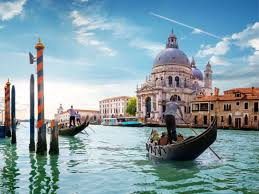
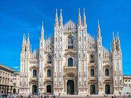
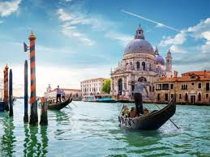
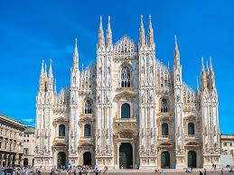

Why Visit Italy?
Italy is a masterpiece of art, history, and cuisine. From the romantic canals of Venice to the ruins of Rome, it offers unforgettable experiences for every traveler.
Best Time to Visit
The best time to visit Italy is during spring (April–June) and fall (September–October) when the weather is comfortable and cities are less crowded.
Top Attractions
- Colosseum in Rome
- Venice Canals
- Florence Cathedral
- Leaning Tower of Pisa
- Amalfi Coast
Local Food & Culture
- Pasta
- A beloved staple of Italian cuisine, prepared in countless delicious ways.
- Art & Architecture
- Italy’s cultural heritage includes masterpieces by Michelangelo and Leonardo da Vinci.